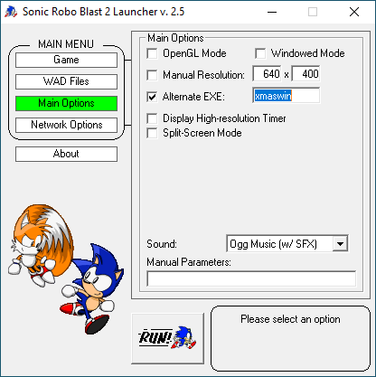

(recommended)
Version 1.1 - Download - Released on 2022/12/22
Version 1.0 - Download - Released on 2021/11/21
(recommended)
Version 1.1 - Download - Released on 2022/12/22
I understand that working with old SRB2 builds may be confusing,
so I've prepared a step-by-step guide to help you run this mod.
Make sure you're using SRB2 Christmas 0.96.
Otherwise the mod won't work as intended, or at all.
Download the SRB2Net Launcher.
This program allows you to load mods, run netgames,and customize
your experience for just about every legacy SRB2 Build.
Place the "SRB2Net.exe" file into the root of the folder you've installed SRB2 Christmas 0.96 to.
Additionally, place the SAGE Remake wad file there as well.
Run "SRB2Net.exe" and navigate your way to the WAD Files section

Once you're in that section click on "Add" and select the SAGE 2000 Remake wad
file that you placed into your SRB2 Christmas 0.96 Folder

Afterwards, make your way to the "Main Options Section and check the box that says "Alternate EXE" and in the field, type "xmaswin"
Once you've done that, click on the "RUN!" button and you should be good to go!